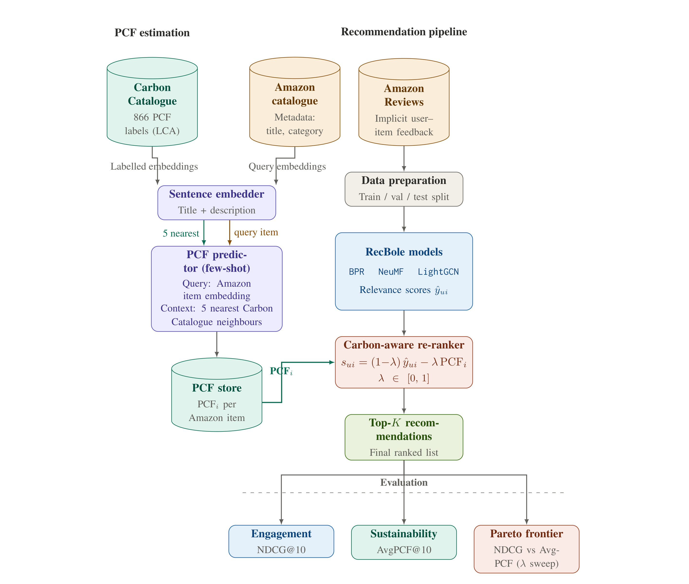
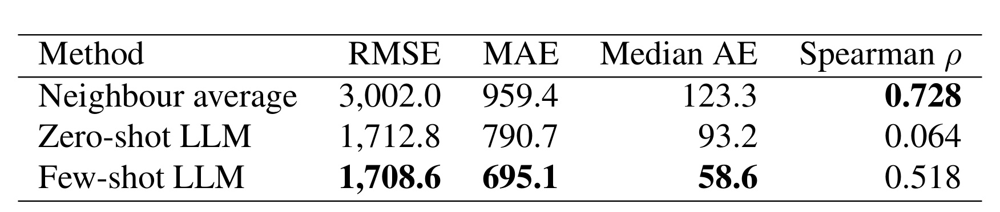
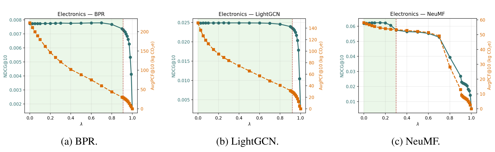
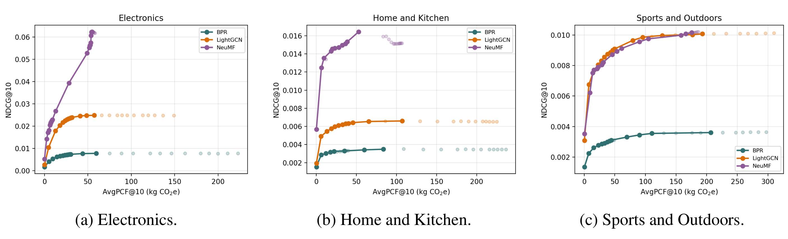
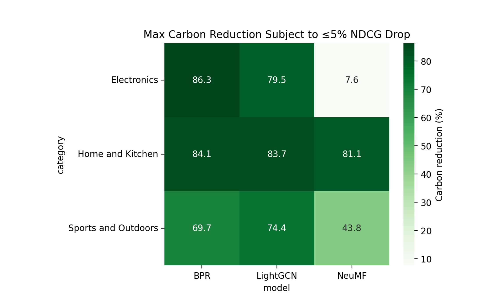

这篇论文的唯一论文入口是 arXiv:2606.04550，标题为 “Trading Engagement for Sustainability: Carbon-Aware Re-ranking for E-commerce Recommendations”。作者 Noah Lund Syrdal、Anders Vestrum、Jorgen Bergh 来自 University of California, Berkeley；论文首页同时给出代码仓库状态：已核验到独立 GitHub 仓库 andersvestrum/carbon-aware-recsys，但本文笔记只把 arXiv abstract 页面作为正文唯一论文入口。它的核心问题是：在电商推荐中，平台能否用一个透明的后处理参数，把用户可能感兴趣的商品列表往低碳商品方向推一点，同时不显著牺牲离线推荐质量。
1. 背景和问题
电商推荐系统平常优化的是点击、收藏、购买或评论等 engagement 信号。这个目标在商业系统里合理，因为推荐列表需要帮助用户快速找到想买的东西；但它也隐含了一个被放大的外部性：排序决定哪些商品获得曝光，而曝光决定用户会把哪些商品纳入考虑集合。如果一个平台长期把高碳、重包装、短寿命或替代性很弱的商品放在显著位置，算法本身虽然没有直接制造排放，却参与塑造了消费结构。论文把这个问题放在可持续消费、欧盟绿色转型消费者授权指令、Digital Services Act 透明度要求和推荐系统选择架构的交叉点上讨论，重点不是道德化地要求用户少买东西，而是问推荐链路能否把商品碳足迹作为一个可度量、可审计、可调节的排序目标。
真正难点在于 Product Carbon Footprint，也就是 PCF，并不是电商目录里的常规字段。PCF 一般来自生命周期评估，单位是 kg CO2e，需要覆盖材料、制造、运输、使用和报废等阶段。对少量被正式评估的产品，可以在 Carbon Catalogue 这类数据集中找到标签；但对 Amazon Reviews 这样的大规模公开推荐数据，绝大多数商品只有标题、品类和交互日志，没有逐商品的供应链和 LCA 结果。也就是说，如果研究者直接做“低碳推荐”，首先面对的不是模型训练问题，而是监督信号缺失问题。论文选择把这个缺口显式化：先从 866 个有 LCA 标签的 Carbon Catalogue 产品迁移 PCF 监督，再把估计出的 PCF 接入 Amazon 商品推荐重排。
这个设定比“已有每个商品的碳标签，直接加入排序目标”更现实。许多可持续推荐论文可以假设 item-level environmental signal 存在，或者在小型、领域专用数据集上做验证；CarbonRerank 则强调大目录里 PCF 需要被估计，而且估计误差会传导到下游排序。它没有把 PCF 估计包装成绝对可靠的绿色标签，而是在方法和限制里反复说明：Amazon 目录的 PCF 是 predicted PCF，不是 observed PCF；Carbon Catalogue 中还有重工业极端尾部，和消费者商品分布并不一致；因此评估时要区分 full holdout 与 consumer-scale subset。这个姿态是本文值得注意的地方，因为可持续推荐如果忽略信号不确定性，很容易把“估计值驱动的离线重排”说成“真实减排”。
从推荐算法角度看，论文采用了非常保守的系统切入点。它没有重新训练一个多目标推荐模型，也没有要求用户界面直接展示碳标签，而是把 BPR、NeuMF、LightGCN 三个常见 RecBole 模型当作候选生成器，先得到每个 user-item 的相关性分数，再对 top-K candidate pool 做 post-hoc re-ranking。这样做的优点是模块化：推荐模型可以照常训练，碳目标通过一个 lambda 参数进入排序；平台或研究者可以扫 lambda，观察 NDCG@10 和 AvgPCF@10 的权衡；如果 PCF 估计器未来更新，也可以替换 PCF store，而不必重写整个推荐模型。代价也很清楚：后处理只能在候选池中重排，不能推荐候选池外的低碳替代品；如果 base model 已经把低碳商品排除在 top-100 之外，重排阶段没有办法凭空找回它们。
这篇论文的研究问题可以压缩成三问。第一，碳感知重排会怎样影响不同候选生成模型的推荐质量；第二，在 NDCG@10 下降可接受的范围内，AvgPCF@10 能降多少；第三，不同算法家族是否会表现出不同的 engagement-sustainability trade-off。作者选择的三个模型覆盖了 pairwise collaborative filtering、neural matrix factorization 和 graph convolution，品类覆盖 Home and Kitchen、Sports and Outdoors、Electronics。这个组合使结论不依赖单一模型或单一品类，但仍然是离线实验，不等价于真实购买行为变化。论文标题里的 “Trading Engagement for Sustainability” 因此很准确：它研究的是 engagement proxy 和 carbon proxy 的交换曲线，而不是证明平台已经实现了真实碳减排。
对工程读者来说，本文最大的价值不是提出复杂模型，而是把一个常被口号化的目标拆成可操作链条：一端是 PCF estimation，另一端是 recommendation re-ranking，中间有明确的归一化、lambda、candidate pool、top-10 评估和 Pareto frontier。每一步都可以单独替换，也都有风险点。PCF 估计可以换更强的领域模型或供应链数据库；候选生成可以换深度序列模型；重排函数可以从线性标量化改成约束优化或个性化 lambda；评估可以从 review proxy 升级到曝光、点击、购买和退货日志。论文没有把这些未来工作都做完，但它建立了一个足够透明的基线框架。
2. 方法
2.1 总流程：先补 PCF，再做推荐重排
论文的方法由三段组成。第一段是 PCF estimation：从 Carbon Catalogue 里已有 LCA 标签的产品出发，把商品标题和品类编码成 sentence embedding，通过相似度检索找到和目标 Amazon 商品最接近的若干有标签产品，然后让 few-shot LLM 在这些标注样例的校准下给出 kg CO2e 数值。第二段是 candidate generation：用 Amazon Reviews 的隐式交互训练 BPR、NeuMF、LightGCN，每个模型对测试用户产生 top-K 候选和相关性分数。第三段是 carbon-aware re-ranking：把模型相关性分数和 PCF 都归一化，通过 lambda 线性组合成最终排序分数，输出 top-10 列表，并计算 NDCG@10、AvgPCF@10 和 carbon reduction。

这张框架图是本文方法的主图。左侧展示 PCF 估计链路：Carbon Catalogue 提供 866 个有 LCA 标签的监督样本，Amazon catalogue 提供标题和品类等商品元数据；sentence embedder 同时把有标签商品和查询商品编码，系统检索 5 个最近邻作为 few-shot prompt 的上下文；LLM 输出每个 Amazon item 的 PCFi，并写入 PCF store。右侧展示推荐链路：Amazon Reviews 的隐式 user-item feedback 经数据准备和 train/validation/test split 后进入 RecBole 模型，BPR、NeuMF、LightGCN 生成 relevance scores；重排器用公式 sui = (1-lambda) yhatui - lambda PCFi 结合 engagement 和 carbon；最后用 top-K recommendations 生成最终列表，再用 NDCG@10、AvgPCF@10 和 Pareto frontier 评估。图里有两个关键接口：PCF store 和 relevance scores。它们说明本文没有把碳目标混进模型训练内部，而是把可持续性做成可插拔的重排信号。
这种模块化设计有实际意义。许多生产推荐系统的候选生成、排序、重排和业务规则层已经分工清晰，如果可持续目标必须重训全部模型，落地门槛会很高；而后处理重排只需要每个候选 item 有一个 PCF 数值，再把该数值与当前排序分数结合。论文也承认这不是最强的多目标优化，因为候选池限制了可替代空间，但正因为它简单，才适合作为第一版可审计机制。lambda 是显式政策杠杆：平台可以选择 0.025、0.1、0.5 这样的具体值，并在仪表盘上报告 NDCG 和 AvgPCF 的变化，而不是让一个黑箱多目标模型隐式决定可持续性权重。
2.2 PCF 估计：Carbon Catalogue 检索、few-shot LLM 与 fallback
PCF 估计部分有三种候选方法。第一种是 nearest-neighbour average。作者用 all-MiniLM-L6-v2 把产品标题编码成 384 维句向量，在 Carbon Catalogue 中按 cosine similarity 找 k 个最近邻，然后把这些邻居的已知 PCF 做无权平均。它没有生成模型，优点是稳定、可解释、排序相关性较好；缺点是绝对值容易受近邻覆盖和高碳尾部影响。第二种是 zero-shot LLM。作者用 Qwen/Qwen2.5-3B-Instruct，只给商品标题和输出格式要求，让模型直接估 PCF，要求输出 1 到 10000 kg CO2e 的合理范围内的一个数，并做严格解析和 clamp。这个 baseline 检查模型参数知识是否足以估计商品碳足迹。第三种，也就是下游采用的方法，是 few-shot retrieval-augmented LLM：先检索 5 个最相似的 Carbon Catalogue 产品，把它们的名称、品类、PCF 和相似度作为带标签样例放入 prompt，再要求模型 step-by-step reasoning 后输出 PCF: X.X kg CO2e。
这里的检索不是为了让 LLM “查资料”，而是为了校准数值尺度。PCF 估计不同于普通文本分类，它的量纲和数量级很关键。一个不锈钢保温杯、塑料旅行杯、铝制水壶即使都属于 kitchenware，PCF 也可能因材料和重量显著不同；如果 prompt 只让模型凭常识回答，它可能给出看似合理但缺乏标尺的数字。通过五个近邻，模型至少能看到相似商品的 kg CO2e 样例，按材料、制造复杂度、重量和品类进行比较。附录 Figure 15 给了完整模板：system message 把模型设为 LCA 和 carbon footprint estimation 专家，instructions 说明五个 reference products 按 sentence embedding 相似度排序，query product 则留空 PCF，response format 要求先推理再输出严格数值。正文没有把这张长模板截图放进笔记，是因为它适合文字复述而不是作为图像证据。
估计器选择不是凭直觉决定，而是用 Carbon Catalogue held-out slice 做基准。作者隐藏每个 held-out 产品的真实 PCF，把它从检索库中排除，再分别用 nearest-neighbour、zero-shot、few-shot 预测，最后计算 RMSE、MAE、median absolute error 和 Spearman rho。Carbon Catalogue 总共 866 个产品，其中存在重工业尾部；为贴近 Amazon 消费品场景，主 benchmark 使用 PCFtrue <= 10000 kg CO2e 的 consumer-scale subset，并且只保留三种方法都能给出有效预测的交集 n=771。这个口径非常重要，因为如果把 heavy industrial products 一起算，LLM 的 clamp range 和消费者商品校准会在极端值上吃亏，而这并不代表它在电商推荐商品上不可用。
附录进一步说明，在 Amazon 目录的报告运行中，72,000 个 scored products 中有 71,989 个拿到了有效 few-shot LLM estimate，占 99.98%；只有 11 个商品因为 few-shot 输出缺失或不可解析，回退到 neighbour-average estimate。也就是说 downstream selected PCF 几乎等同于 few-shot prediction，但保留了小比例 fallback。这一点对工程落地有用：LLM 数值生成必须配合 parser、clamp 和 fallback，否则一个推荐链路可能因为少量不合规输出中断。论文的 fallback 设计很朴素，但符合生产系统容错：宁可用可解释的最近邻均值填补，也不把 invalid LLM output 强行写入 PCF store。
2.3 候选生成：BPR、NeuMF、LightGCN 与 Amazon Reviews
推荐部分使用 Amazon Reviews 数据集。每条 review 被当作 implicit feedback：它不证明用户真实购买了商品，也不证明用户喜欢商品，只说明用户和商品发生了可观测互动，因此可作为离线 engagement proxy。作者按时间做 train/validation/test split，保证每个用户的 held-out interaction 晚于训练历史。过滤并转换成 RecBole 格式后，每个品类保留 24,000 个 item；Electronics 有 110,550 个 users 和 1,036,192 个 interactions，Home and Kitchen 有 91,421 个 users 和 874,971 个 interactions，Sports and Outdoors 有 63,216 个 users 和 535,010 个 interactions。这个规模足以做多模型比较，但仍然不是完整曝光日志；没有 review 的商品可能是未曝光、未购买、购买未评论或用户不愿评论，无法被简单解释为负反馈。
三种候选生成模型分别代表不同范式。BPR 是 pairwise collaborative filtering，面向隐式反馈，用 pairwise ranking loss 学习用户偏好；NeuMF 结合 matrix factorization 和 multi-layer perceptron，通常能拟合更复杂的 user-item 非线性关系；LightGCN 把 user-item interaction graph 作为图结构，用轻量图卷积传播协同信号。这三种模型都由 RecBole 训练和评估，基础超参数尽量统一：embedding size 64、epochs 50、learning rate 0.001、uniform negative sampling 1:1、full sort evaluation、timestamp split、NeuMF 使用 [128,64,32] MLP hidden layers 和 0.1 dropout，LightGCN 使用 3 层 graph convolution。统一框架减少了实现差异，使后续重排差异更可能来自模型分数分布和候选池结构。
候选生成输出的是 relevance score yhatui。论文把它称为 predicted engagement 的 proxy，而不是用户真实购买概率。对每个测试用户，系统先用 base model 生成 top-K candidates，K=100；再在这 100 个候选内做碳感知重排，最后输出 top-10。K=100 是一个折中：比最终 top-10 多很多，给重排器提供替换空间；但比 K=500 或 K=1000 更省计算，也更贴近可控实验。这个选择直接影响 carbon headroom：候选池越宽，越可能包含相关性相近但 PCF 更低的商品；候选池越窄，重排器只能在高相关性小集合里微调，降碳空间有限。作者在限制部分也建议未来比较 K=100、K=500、K=1000，检查 observed headroom 有多少来自 retrieval breadth。
2.4 Lambda 重排公式与可审计性
重排公式是本文最核心也最简单的数学对象。令 y_tilde_ui 表示 user u 对 item i 的 relevance score，经 per-user min-max normalization 映射到 [0,1]；令 PCF_tilde_i 表示 item i 的 estimated product carbon footprint，经全局 min-max normalization 映射到 [0,1]。最终排序分数为：
符号解释：s_ui 是用户 u 对商品 i 的最终重排分数；\tilde{y}_{ui} 是按用户 min-max 归一化后的模型相关性分数；\widetilde{PCF}_{i} 是按全局 min-max 归一化后的商品碳足迹估计值；lambda 是可调权重，控制 engagement 与 sustainability 的边际替代强度；减号表示 PCF 是待最小化的环境成本，而不是另一个待最大化的效用项。
当 lambda=0 时，分数退化成原始模型相关性，推荐列表完全 engagement-only；当 lambda=1 时，排序只看 normalized carbon signal，优先选择候选池中低 PCF 的商品。中间值表示在相关性和碳足迹之间做线性标量化。负号很关键，因为 PCF 是要最小化的目标，而 engagement 是要最大化的目标。作者对 engagement 使用 per-user normalization，是为了消除不同用户和模型分数尺度差异；对 PCF 使用 global normalization，是因为 PCF 是 item-level 环境属性，同一个商品对所有用户的碳足迹相同。这个归一化选择使 lambda 在不同用户和模型之间具有较一致的解释，但也引入 heavy-tailed PCF 分布敏感性，所以论文把 z-score、quantile normalization、rank-based penalty 列为未来 robustness checks。
这类线性重排的优点是透明和易审计。平台可以把 lambda 当作 policy lever，对每个品类和模型扫一组离散值，记录每个值下 NDCG@10 和 AvgPCF@10。监管或内部治理团队也能理解：lambda 增大，碳惩罚变强；如果 NDCG 掉得太多，就回退到更小 lambda。相比把 sustainability objective 直接嵌进模型训练，lambda 重排不会隐藏偏好权重，也便于把系统行为写进审计报告。缺点也同样透明：线性标量化通常只能找到凸包上的 Pareto 点，无法覆盖所有可能的非凸 trade-off；min-max normalization 会被极端 PCF 值影响；每个品类、模型、用户群可能需要不同 lambda，单一全局 lambda 未必公平或有效。
还要注意，本文的 lambda 重排是在每个用户自己的 candidate list 内执行，而不是对全站商品重新排序。这个局部性决定了算法复杂度和解释口径：对用户 u，系统只需要读取该用户 top-100 候选、每个候选的归一化相关性和 PCF，然后按 s_ui 排序并截取 top-10；因此重排成本接近 O(K log K)，不会改变 BPR、NeuMF、LightGCN 的训练过程，也不会要求 PCF estimator 参与在线模型 forward。这个设计让 carbon-aware layer 可以作为 ranker 后的策略层部署，但也意味着它继承 candidate generation 的所有偏差。若某类低碳商品在原始候选池中覆盖不足，lambda 再大也只能在已经召回的商品里选择；若 PCF store 对某些品类系统性低估，重排器会把这种估计误差放大为曝光偏差。因此方法上必须同时记录 candidate-pool size、PCF missing/fallback 比例、归一化口径和每个 lambda 的实际替换比例。
2.5 指标：NDCG、AvgPCF、Reduction 与 Pareto frontier
实验用 NDCG@10 衡量 engagement。由于采用 leave-one-out protocol，每个测试用户只有一个 held-out relevant item，NDCG@10 奖励把这个 item 排在 top-10 中更靠前。作者没有强调 Recall@10，因为在单一 held-out item 下，Recall@10 基本退化为 hit rate，无法表达排名位置质量。NDCG@10 的随机基线约为 1.9e-4，远低于模型结果，说明 base recommenders 确实学到了协同信号。但 NDCG 仍然只是离线代理，不包含点击界面、价格、库存、品牌偏好、促销、曝光偏差和用户对绿色信息的真实反应。
可持续指标是 AvgPCF@10，即每个用户最终 top-10 推荐列表中 item predicted PCF 的平均值，单位仍保留 kg CO2e。作者没有把 PCF 映射成 bounded greenness score，而是直接报告碳足迹平均值，因为重排公式惩罚的也是这个量。为跨模型和品类比较，论文还报告相对碳降幅：
这个指标把每个模型在 engagement-only baseline 下的平均 PCF 作为参照，因此能回答“相对原始推荐列表，低碳重排减少了多少推荐暴露碳足迹”。注意它不是用户真实购买碳排放下降，因为 review interaction 不等于购买，推荐曝光不等于选择，estimated PCF 不等于观测 LCA；它只是在离线推荐列表层面衡量 predicted PCF exposure。
Pareto frontier 用来总结每个 lambda operating point 的非支配关系。作者固定 lambda grid，从 0 到 1 扫 25 个点，在低 lambda 和高 lambda 区间使用更密的步长，以捕捉早期微调和末端 engagement cliff。每个点对应一组 NDCG@10 与 AvgPCF@10。如果不存在另一个点同时拥有更高 NDCG 和更低 AvgPCF，该点就是 Pareto-optimal。曲线越靠左上，表示在更低碳足迹下保持更高 engagement。这个图形比单个 lambda 结果更有信息，因为它展示的是可选择空间：某些模型 baseline NDCG 高，但 frontier 很陡；另一些模型 baseline 低一点，却能在小 NDCG 代价下大幅降低 AvgPCF。
3. 实验结果
3.1 PCF 估计结果：few-shot 绝对误差最好，近邻排序最好
在 consumer-scale hold-out intersection 上，few-shot LLM 是下游默认 PCF signal。它的 RMSE 1708.6、MAE 695.1、median AE 58.6 都是三者最低；zero-shot LLM 的 RMSE 1712.8 接近 few-shot，但 MAE 和 median AE 更差，Spearman rho 只有 0.064，说明没有检索样例时，模型对绝对数量级能给出一些近似，却很难保持商品之间的相对排序。Neighbour average 的 RMSE 3002.0、MAE 959.4、median AE 123.3 较差，但 Spearman rho 0.728 最高，表示语义近邻很好地保留了局部排序。论文选择 few-shot 的逻辑是：下游 AvgPCF@10 需要绝对碳足迹数值，而不是只需要一个相对高低序；因此绝对误差优先。

Table 1 是 PCF 估计模块的关键验收表。它把 neighbour average、zero-shot LLM、few-shot LLM 放在同一批 consumer-scale hold-out rows 上比较，避免不同方法因解析失败或样本过滤不同而不可比。few-shot 的优势主要体现在绝对误差，median AE 从 neighbour average 的 123.3 降到 58.6，MAE 从 959.4 降到 695.1；zero-shot 虽然 RMSE 与 few-shot 接近，但 Spearman rho 几乎失效，说明没有检索样例时模型很难稳定保留商品之间的碳足迹相对次序。Neighbour average 的高 rho 则说明语义检索本身不是无用 baseline，它只是更像局部排序器而非数值校准器。这个表支撑了下游 selected PCF 的选择：默认采用 few-shot LLM，只有解析失败或输出缺失时才回退到 neighbour average。
这个结果也提醒我们，PCF estimation 并不是已经解决的高精度测量。即使在消费者尺度，MAE 仍有 695.1 kg CO2e，RMSE 仍超过 1700 kg CO2e，误差很大。Median AE 低很多，说明多数普通产品误差较小，但少数高碳产品拉高均方误差。Full 866-item holdout 中 neighbour average 反而更强，是因为 92 个 true PCF > 10000 kg CO2e 的 heavy-tail products 超出 LLM prompt 的 consumer-oriented clamp range。作者没有掩盖这个分裂，而是把 full holdout 作为 robustness check，把 consumer-scale subset 作为 downstream aligned benchmark。对推荐落地而言，这意味着 PCF store 应附带置信度、数据源和估计口径，不能把 predicted PCF 当作绝对环境真值。
3.2 Lambda 敏感性：先平台期，后崩塌
主结果首先看 lambda sweep。Figure 2 选择 Electronics 作为代表，三列分别是 BPR、LightGCN、NeuMF；每个 panel 里，实线表示 NDCG@10，虚线表示 AvgPCF@10，绿色阴影标出 NDCG@10 相对 lambda=0 baseline 下降不超过 5% 的区间。

这个图最明显的模式是 plateau followed by sharp decline。对 BPR 和 LightGCN，lambda 从 0 增大到相当一段范围内，NDCG@10 基本保持平稳，而 AvgPCF@10 持续下降；说明 candidate pool 里存在不少相关性接近但 PCF 更低的替代商品，线性重排能把它们提前，而不立刻损害 held-out item 排名。当 lambda 继续增大到接近 carbon-only 时，NDCG 开始急剧下滑，因为排序已经不再尊重模型相关性。NeuMF 的曲线更敏感，尤其在 Electronics 中，低碳重排较早扰动其高 engagement 排名。论文解释可能原因是 NeuMF 分数分布更尖，强相关 item 和普通 item 的分数间隔更大，一旦加入碳惩罚，原本高置信度排序被打乱，NDCG 更快下降。
在 5% NDCG budget 下，BPR 和 LightGCN 通常能获得约 70% 到 86% 的 carbon reduction，而 NeuMF 的可用空间较小；Electronics 中 NeuMF 只有 7.6% carbon reduction 能留在同一预算内。这个结论很有工程含义：最强 engagement 模型不一定给出最大 sustainability headroom。如果平台只按 baseline NDCG 选模型，NeuMF 可能最优；但如果平台希望在小 engagement cost 下大幅降低 AvgPCF，BPR 或 LightGCN 可能更合适。也就是说，碳感知推荐把模型选择问题从“谁 NDCG 最高”变成“谁的 Pareto frontier 最好”。
3.3 Pareto frontier：NeuMF 高起点，BPR/LightGCN 更可调
Figure 3 把三个模型的 Pareto-optimal points 放到同一个图里，按 Electronics、Home and Kitchen、Sports and Outdoors 三个品类分面。每个点来自一个 lambda，暗色连线表示非支配前沿，灰点表示被支配的 evaluated settings。曲线越靠左上，表示同样 AvgPCF 下 NDCG 更高，或同样 NDCG 下 AvgPCF 更低。

从图中可以读出两个层次。第一，NeuMF 在三个品类中都有最高绝对 engagement，因此如果目标是最大化 NDCG，它通常站在上方。第二，BPR 和 LightGCN 在许多区间有更长、更平缓的 frontier，意味着它们牺牲少量 NDCG 就能换来更多 carbon reduction。这个差异说明候选生成模型不仅决定 baseline relevance，也决定候选池里低碳替代品的可访问性和 score margin。如果模型把相关商品的分数压得很平，lambda 有更多空间调换顺序；如果模型把少数高相关商品打得很尖，低碳项更难进入前排。
论文没有把某一个模型宣布为“低碳推荐最佳模型”，而是按品类和预算讨论。5% NDCG budget 内，BPR 在 Electronics 和 Home and Kitchen 领先，LightGCN 在 Sports and Outdoors 领先；NeuMF 在 baseline engagement 上有优势，但碳弹性往往较低。这个结果也提示部署策略不应是全站一个模型加全站一个 lambda。更合理的工程设计是：每个品类、每个业务面和每个模型都先离线扫 frontier，再选符合业务约束的 operating point；对高碳差异明显且替代性强的品类，可以用更高 lambda；对替代性弱或用户需求更精准的品类，应保守一些。
3.4 品类差异：Home and Kitchen 最灵活，Electronics 最依赖模型
Figure 4 汇总了一个更直观的问题：在 NDCG@10 相对 lambda=0 下降不超过 5% 的约束下，每个模型和品类最多能降低多少 AvgPCF@10。它不是完整 frontier，而是把每组 frontier 压成一个可比较的 carbon headroom 数字。

热力图给出的信息非常强。Home and Kitchen 是最灵活的品类，三个模型都能在 5% NDCG budget 内超过 80% carbon reduction。这说明该品类中存在大量可替代商品：用户兴趣和碳足迹不完全绑定，重排器能找到低碳但仍相关的商品。Electronics 则模型依赖最强：BPR 可达到 86.3% reduction，而 NeuMF 只有 7.6%。这可能与 electronics 商品的功能规格、品牌和价格层级更强相关有关；当 NeuMF 学到尖锐相关性时，低碳替代品很难在不破坏 NDCG 的情况下替换高分 item。Sports and Outdoors 介于两者之间，LightGCN 表现出较好的 headroom。
品类差异是本文对真实部署最有价值的提醒。可持续目标不能只看全局平均，因为不同商品域的 substitute structure 完全不同。厨房用品中，一个保温杯、收纳盒、锅具或家居小件可能有多个功能相近但材料和重量不同的替代项；电子产品中，用户需求可能更依赖具体规格，低碳项如果不是同功能替代，很快损害 engagement。对平台而言，这意味着 lambda 可以按 category、query intent、price band 或 user segment 分层，而不是强制全局一致。论文没有做个性化 lambda，但它的数据已经显示单一政策参数跨品类迁移会失真。
3.5 与传统推荐实验相比，本文结果应如何读
这篇论文的结果不能按常规 recommender leaderboard 方式读取。它的 NDCG 不是为了证明 BPR、NeuMF、LightGCN 谁更先进，而是为了用熟悉 baseline 观察碳重排的影响。它的 AvgPCF 也不是直接碳排放，而是 predicted PCF exposure。真正的主结论是 trade-off shape：许多模型和品类存在一个低成本区间，在该区间 AvgPCF@10 大幅下降而 NDCG@10 尚未明显恶化；但这个区间取决于模型、品类和候选池。Pareto frontier 让这种形状可视化，避免只报告某个 lambda 的孤立数字。
如果要把本文方法接到工业系统，第一步不是马上上线碳排序，而是补足四类监控。第一，PCF estimator 监控：每个商品的估计来源、近邻相似度、LLM 输出解析状态、fallback 使用率、PCF 分布漂移。第二，推荐质量监控：NDCG、CTR、CVR、GMV、退货率、用户停留等线上指标，而不仅是 review-based NDCG。第三，公平与覆盖监控：低碳重排是否系统性压低某些商家、价格段、地区或新品。第四，用户解释和选择监控：如果界面展示低碳理由，用户是否理解、是否产生反感、是否只是点击不同商品但总购买量不变。本文只覆盖第一版离线技术框架，后面这些都属于上线前必须补齐的环节。
4. 总结
CarbonRerank 的贡献在于把“可持续推荐”做成一个端到端但可拆开的实验框架。它先承认电商目录没有真实 PCF 标签，于是用 Carbon Catalogue 的 866 个 LCA 标注产品作为监督源，通过 sentence embedding retrieval 找到相似样例，再用 Qwen/Qwen2.5-3B-Instruct 做 few-shot 数值估计，并为少量不可解析输出保留 nearest-neighbour fallback。然后它不改 BPR、NeuMF、LightGCN 的训练目标，而是在候选池内用 lambda 线性重排，把 normalized engagement 和 normalized PCF 明确组合。最后它用 NDCG@10、AvgPCF@10、carbon reduction 和 Pareto frontier 量化权衡。
从结果看，论文支持一个谨慎乐观的结论：在不少模型和品类中，推荐列表的 predicted carbon exposure 可以在小 NDCG 代价下降很多。BPR 和 LightGCN 经常提供更大的 carbon headroom；NeuMF 的 baseline engagement 更高，但 frontier 往往更陡。Home and Kitchen 的可替代空间最大，Electronics 更依赖模型和分数形状。lambda 因此不是一个全局万能旋钮，而是一个需要按模型和品类校准的透明政策参数。
这项研究的边界同样清楚。Amazon Reviews 只是 implicit review interactions，不是真实曝光和购买日志；PCF 是从 metadata 推断的 selected PCF，不是 Amazon 商品的实测 LCA；offline NDCG 无法预测用户看到绿色信息后的行为；candidate pool K=100 限制了可替代空间；min-max normalization 可能受 heavy-tailed PCF 影响；模型计算本身也有环境成本。本文的正确读法不是“已经证明低碳推荐会减少真实排放”，而是“给出了一套可审计离线方法，用于研究 engagement 和 estimated PCF exposure 之间的可调权衡”。
对后续工作，最直接的方向有四个。第一，用更可靠的商品碳数据库、供应链字段或领域模型降低 PCF 估计不确定性，并给每个 item 附带置信区间。第二，把候选池大小、归一化方式、lambda grid 和低碳替代约束做 robustness study，确认 carbon headroom 不是特定设置的产物。第三，把碳目标从 post-hoc re-ranking 扩展到模型训练或 constrained optimization，但保留 lambda 这种可解释控制面。第四，在真实平台或用户实验中评估低碳排序、解释文案和用户自主选择之间的关系。只有完成这些步骤，CarbonRerank 这样的离线框架才能从“推荐列表碳暴露分析”走向“真实可持续消费干预”。